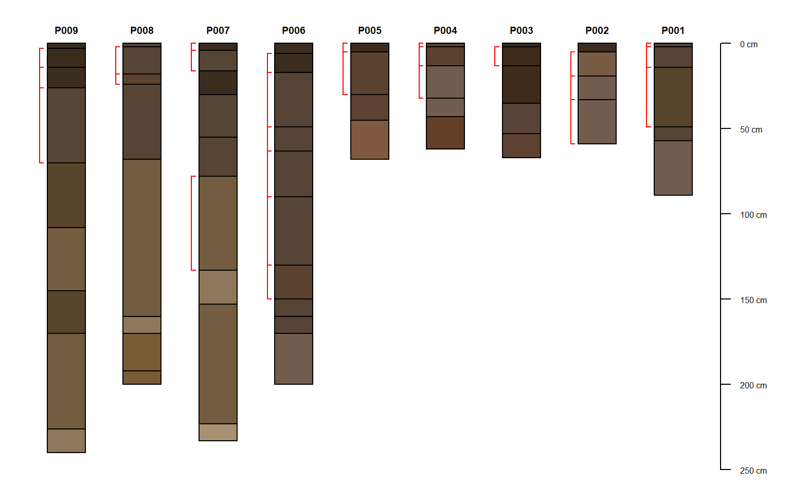

Add depth brackets to soil profile sketches.
addBracket( x, label.cex = 0.75, tick.length = 0.05, arrow.length = 0.05, offset = -0.3, missing.bottom.depth = NULL, ... )
Arguments
| x |
|
|---|---|
| label.cex | scaling factor for label font |
| tick.length | length of bracket "tick" mark |
| arrow.length | length of arrowhead |
| offset | left-hand offset from each profile |
| missing.bottom.depth | distance (in depth units) to extend brackets that are missing a lower depth (defaults to max depth of collection) |
| ... | further arguments passed on to |
Details
x may contain multiple records per profile. Additional examples can be found in this tutorial.
Note
This is a low-level plotting function: you must first plot a SoilProfileCollection object before using this function.
See also
Author
D.E. Beaudette
Examples
# sample data data(sp1) # add color vector sp1$soil_color <- with(sp1, munsell2rgb(hue, value, chroma)) # promote to SoilProfileCollection depths(sp1) <- id ~ top + bottom # plot profiles par(mar = c(0, 0, 0, 1)) plotSPC(sp1, width = 0.3)# extract min--max depths associated with all A horizons # result is a single-row data.frame / profile combinedBracket <- function(i) { h <- horizons(i) idn <- idname(i) this.id <- h[[idn]][1] idx <- grep('^A', h$name) res <- data.frame( id = this.id, top = min(h$top[idx]), bottom = max(h$bottom[idx], na.rm=TRUE) ) names(res)[1] <- idn return(res) } # return matching horizon top / bottom depths for A or C horizons # result is a 0 or more row data.frame / profile individualBrackets <- function(i) { h <- horizons(i) idn <- idname(i) this.id <- h[[idn]][1] idx <- grep('^A|^C', h$name) res <- data.frame( id = this.id, top = h$top[idx], bottom = h$bottom[idx] ) names(res)[1] <- idn return(res) } # combined brackets b1 <- profileApply(sp1, combinedBracket, frameify = TRUE) # individual brackets b2 <- profileApply(sp1, individualBrackets, frameify = TRUE) # plot in reverse order plotSPC(sp1, plot.order = rev(1:length(sp1)), width = 0.25)# note that plotting order is derived from the call to `plotSPC(sp1)` addBracket(b1, col='red', offset = -0.35)# note that plotting order is derived from the call to `plotSPC(sp1)` addBracket(b2, col='red', offset = -0.35)